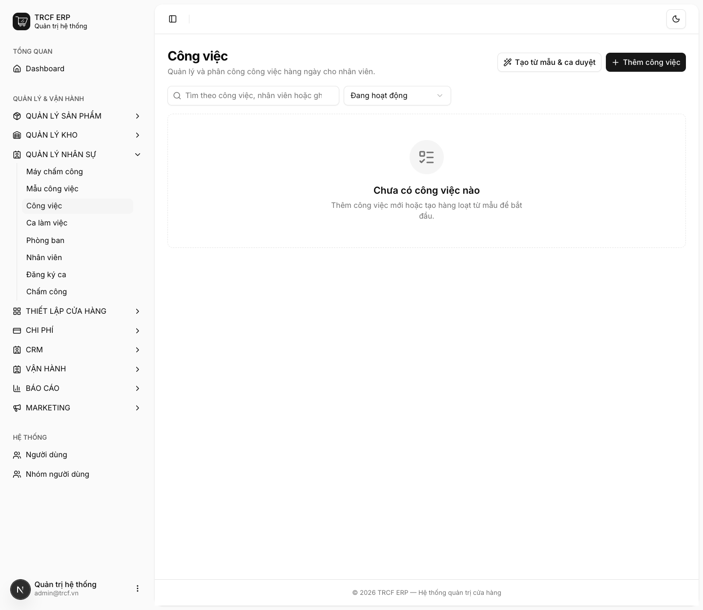
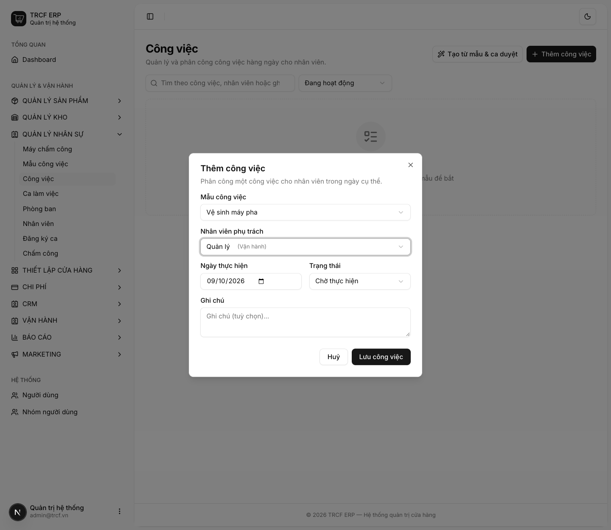
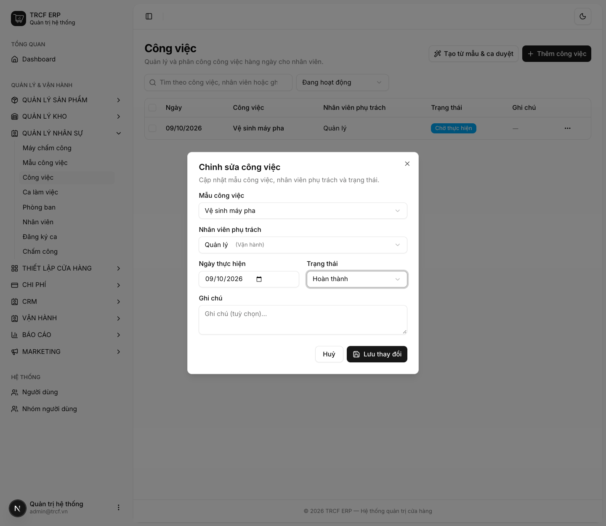
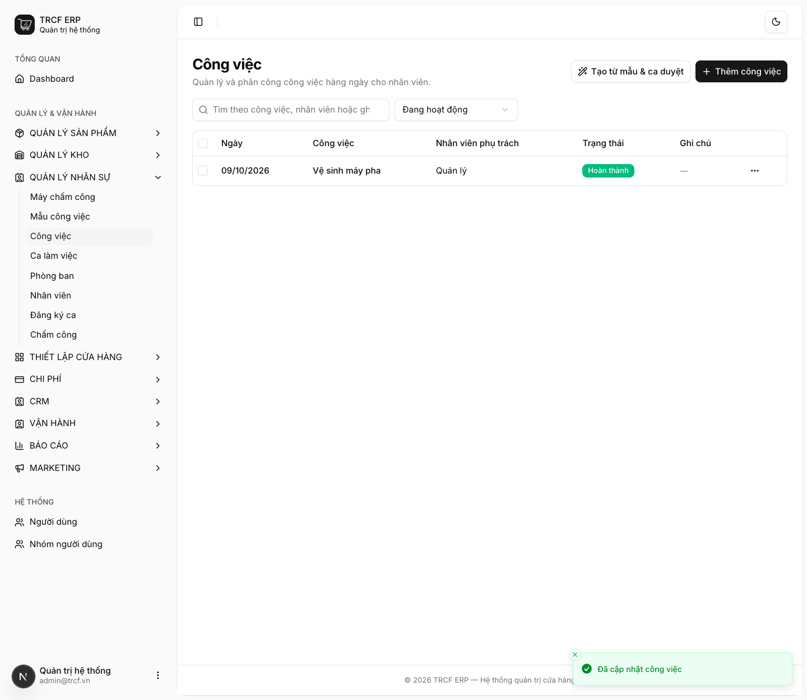
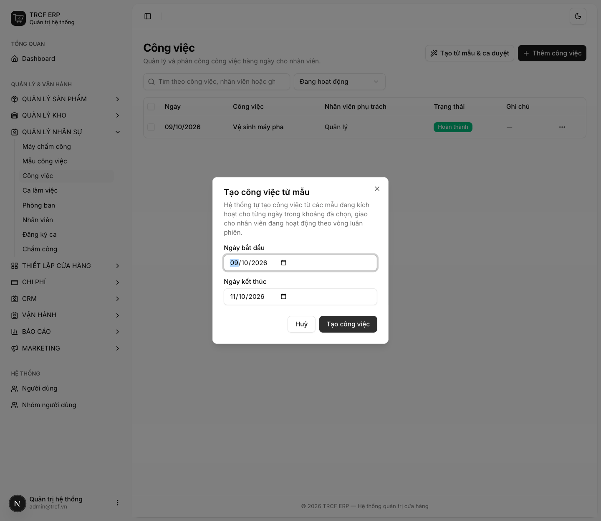

Chương 5 · Quy trình bán hàng tại quầy
5.2 Thực hiện checklist trong ca làm việc
1. Đường dẫn vào chức năng
Menu trái: Quản lý nhân sự → Công việc (địa chỉ /task-assignments).
- Là gì: danh sách việc lặp mỗi ca (vệ sinh máy pha, lau tủ lạnh, kiểm hạn sử dụng, đổ rác).
- Cần có trước: mẫu công việc (mục 7.5).
2. Ví dụ nền và các bước thực hiện
Ví dụ: việc "Vệ sinh máy pha" giao cho nhân viên "Quản lý" ngày 09/10/2026.
- Nhân viên: đầu ca xem việc của mình, làm xong thì đổi sang Hoàn thành.
- Quản lý: sinh việc hàng loạt từ mẫu, cuối ngày kiểm tra việc nào chưa xong.
Bước 1Mở màn Công việc
- Bấm Quản lý nhân sự ở menu trái.
- Chọn Công việc.
- Danh sách trống nếu chưa có việc nào.

Bước 2Quản lý: thêm một công việc
- Bấm Thêm công việc.
- Mẫu công việc: chọn "Vệ sinh máy pha".
- Nhân viên phụ trách: chọn "Quản lý (Vận hành)".
- Ngày thực hiện: giữ ngày hôm nay.
- Trạng thái: giữ "Chờ thực hiện".
- Bấm nút Lưu công việc.

Bước 3Nhân viên: đổi trạng thái sang Hoàn thành
- Đầu ca mở Quản lý nhân sự → Công việc, tìm việc của mình.
- Bấm nút … cuối dòng, chọn Sửa.
- Trạng thái: chọn "Hoàn thành" (có 3 mức: Chờ thực hiện, Đang thực hiện, Hoàn thành).
- Bấm nút Lưu thay đổi.

Bước 4Kiểm tra kết quả
- Dòng công việc hiện trạng thái Hoàn thành.
- Hệ thống tự ghi thời điểm hoàn thành, không cần nhập tay.

Bước 5Quản lý: sinh việc hàng loạt từ mẫu
- Bấm Tạo từ mẫu & ca duyệt.
- Ngày bắt đầu, Ngày kết thúc: chọn khoảng ngày cần sinh việc.
- Bấm nút Tạo công việc.
- Hệ thống sinh việc từng ngày từ các mẫu đang kích hoạt, chia luân phiên cho nhân viên.
- Cuối ngày mở lại màn này xem việc nào chưa xong, ai chưa làm.

3. Giải thích các trường
| Trường | Điền gì |
|---|---|
| Mẫu công việc | Việc cần làm (khai ở mục 7.5) |
| Nhân viên phụ trách | Người chịu trách nhiệm việc này |
| Ngày thực hiện | Ngày cần làm xong |
| Trạng thái | Chờ thực hiện / Đang thực hiện / Hoàn thành |
| Ghi chú | Ghi chú thêm (không bắt buộc) |
4. Lưu ý quan trọng
⚠️
Nút sinh việc hàng loạt chỉ chia cho nhân viên đủ điều kiện.
- Chưa duyệt ca cho ai (mục 7.3) thì hệ thống báo lỗi.
- Không sinh việc treo không người làm.
💡
Bấm sinh lần hai cho cùng khoảng ngày sẽ bỏ qua việc đã có, không tạo trùng. Cứ bấm lại yên tâm.
💡
Hệ thống tự ghi thời điểm hoàn thành khi đổi trạng thái sang Hoàn thành.